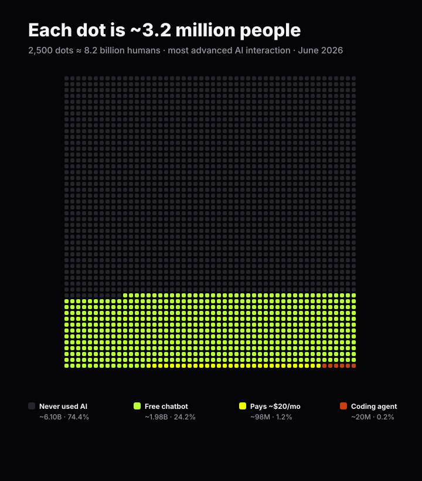
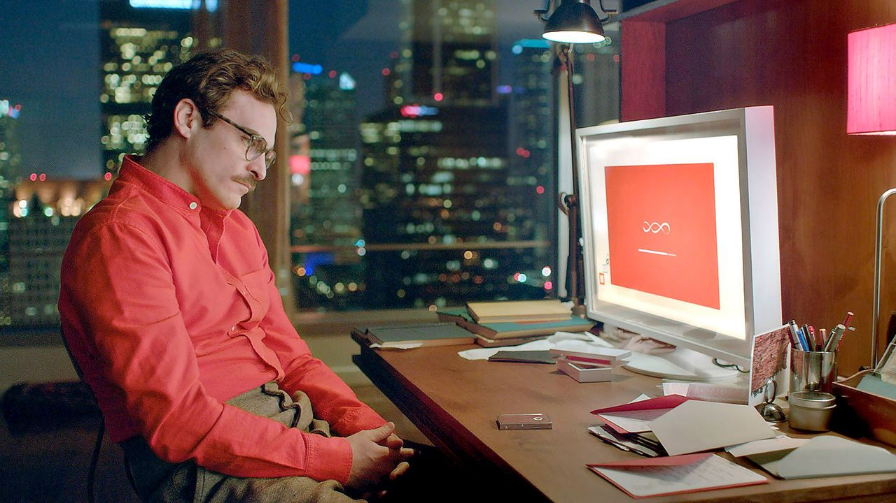

A straight read on where AI actually is right now — what's real, what's hype, what broke, and why the next 18 months decide who wins.

In the movie Her we get a possible future of artificial intelligence. We talk to our phone and there's an intelligence that gets us. It's smart. It's funny. And it doesn't just know how to solve our problems — it goes off and takes care of them while we sleep.

This is the promise of AI — but we're not there yet.
Even though AI makes fewer mistakes than humans on a lot of things, it still makes enough to be frustrating. AI doesn't work out of the box. A person has to become an AI engineer (such a new role) to build the digital brain that makes it work the way you want. And even though it moves way faster than a whole team of people, it can still feel frustratingly slow.
But the advancements are happening so fast that new AI models come out about once a month, with almost daily updates.
As of June 2026, AI agents (think of them as digital employees) can work 3–4 hours on their own and get a task about 80% right on the first try.
At Buildwise Media we spin up about 1,000 agents a day — a thousand digital employees working on our clients' behalf, 24/7/365. But they're not perfect. That's the honest part, and it's why real humans on our team still matter.
By around September of this year, OpenAI says it expects an intern-level research assistant6 — and at a frontier AI lab, an "intern" is usually a mid-PhD computer scientist.
The most powerful consumer model yet, Anthropic's Fable 5, was live for only a few days this month before a U.S. Commerce Department order suspended access7. We got to build with it while it was up, and its capabilities are genuinely inspiring — we upgraded the digital brain that builds for our clients in that short window, and we're looking forward to getting access again.
Because of this pace, Buildwise Media's clients are at a real advantage right now. For roughly the next 18 months, a business that builds with AI gets to operate at a level its competitors simply can't match yet. At Anthropic — one of the labs setting the pace — the typical engineer now merges eight times as much code per day as they did in 2024.2 That's the shape of the edge: more built, more fixed, more shipped, in the same week.
But it won't last. The edge is open now and it's closing.
The signals are everywhere.
The labs at the very edge now say that some time in 2028, AI will be able to run much of its own research and improve itself.8 When that happens, it starts taking over the revenue-generating parts of a business — and the companies still "getting started" will be too late.
The companies that make AI native to how they run, not bolted on, are the ones that thrive while others fold.
How can I say that so plainly? Because AI is intelligence, it's become expert-level capable, and a business that can put thousands of digital employees to work will out-run the one still trying to figure out its website. This is the advantage we make sure our clients have.
We're in the top fraction of a percent of what we do — and we're even rarer because we're focused only on revenue for service businesses. And things are still far from perfect. Here's the real state.
Last year, people thought AI was a giant bubble. This year, AI companies are the most valuable on the planet. Now the job is to prove the ROI for the people using AI. In some ways it's exceeded our expectations.
We took one client from just over $300,000 a year to break the $10,000,000+ mark in a single year.
And for a commercial client breaking into residential, our system has logged about 150 leads since launch — leads that simply weren't coming in before.
Here's what each month actually looked like:
But AI is still evolving, and there are real challenges. We rebuilt an entire website for a well-established home-staging and interior-design firm with strong existing search rankings. When we moved their SEO to the new site we saw the expected dip in Google rankings, and our system couldn't fully erase it — though it's bouncing back faster than a normal rebuild would.
Real-estate brokerages are the hardest thing our system does. Where we're strongest is the speed and quality of what we produce:
Where we're still improving is pure lead generation. Real estate is human-to-human more than almost anything else — and as AI gets as capable as the best humans, we expect to turn that corner sooner than later.
Both SEO (getting "free" leads from Google searches) and AEO (getting recommended by AI) take time and attention — and I've never met a business owner who didn't want more business right now, even when they're already drowning in it. So we're building out advertising, because it's the fastest way to bring in new, qualified leads.
For Meta ads (Facebook & Instagram), our system can already build the campaign, make the creative, and run the platform end to end. We're testing it on ourselves first — once it delivers a 2× return for 90 days straight, we'll pilot it with a few clients.
We're also building Google Ads, which is more straightforward because it runs on math — and math is exactly where AI shines: find the right keywords, build the campaigns, set the budget, execute. We expect the first Google Ads live by the end of this month for select clients.
The difference, if it isn't obvious: instead of handing you an expert human, we train the AI to be the expert — native to your business. We believe that's the only way to protect your business's future.
Since the start of 2026 we've built custom AI we can deploy into a business within weeks:
The system that turns a business AI-native pulls from all the frontier labs at once. It does its own research, finds the best solution, and builds it right into the business. Every time a model improves, that improvement rolls into your business the same day — usually within minutes.
I like to work with people I like, so most of us are pretty similar. We're ambitious, we care about our clients, and we want what we want — and we want it now. That's what I'm bringing you: keeping Buildwise Media, and therefore you, at the very edge of what AI can do at any given moment. It's not a perfect process. But as I've shown you, it's a very fast one.
The tools will keep moving on their own schedule. The one clock you control is how fast you decide to build. I'd start now.
— Robert
Founder, Buildwise Media
[ This section appears on the CLIENT version only — friends get the essay + the referral ask + sign-off. ]
AI is great at revenue — it's also great at operations. Many businesses report 30–40% efficiency gains in the first year by automating routine work.9
Since you're a valued client, the team and I will work with you one-on-one to find what can be automated or tightened up — including cybersecurity, where AI is excellent — freeing you and your team for higher-value work (or more time off) and making your business safer.
Find what to automate →Time is one of the most valuable things there is. Just for you, we'll set up a weekly 30-minute meeting to go over anything you need or want, so we keep tuning your system to exactly what you can imagine. The only ask: same time, same day each week.
Claim my weekly slotIf you know a business owner who'd rather get ahead of AI than get run over by it, send them our way.